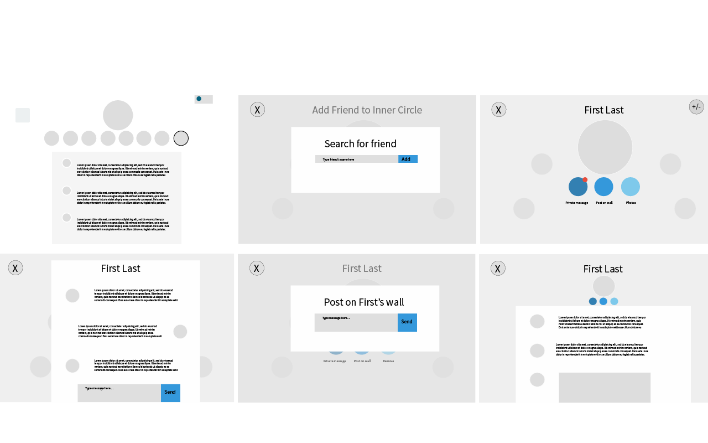
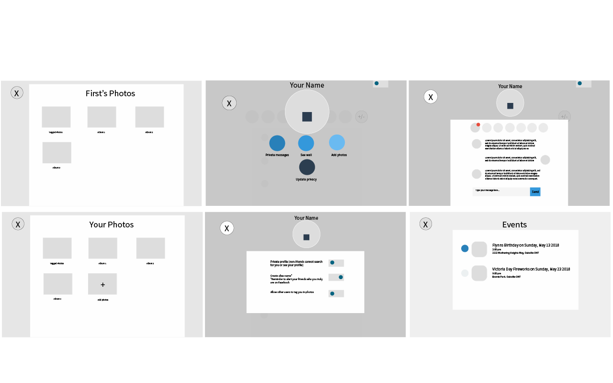
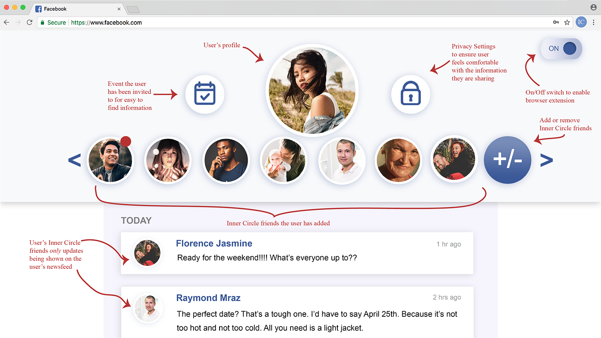

Inner Circle

Project Statement
People over the age of 65 have a difficult time using modern technology due to reasons including but not limited to; a delayed exposure in life to computers, privacy fears and, physical and mental differences that are part of natural development. These reasons make it harder for senior citizens to feel comfortable navigating through different websites and communicating with loved ones via the internet. Inner Circle is a web plugin that will allow users over the age of 65 to connect with their loved ones and keep in contact using modern communication. By enabling Inner Circle through their web browser, users will be able to use their Facebook account in a simplified and accessible way.
Target UsersThe primary target audience is users who are 65 years old or older with varying skill levels and understanding of modern technology. This age group has been targeted because the design choices made on Facebook, among other web apps, have created difficulties for senior citizens to navigate through. The difficulties include but are not limited to; cluttered screens, too many options, small text, and icons that aren’t defined.
The secondary target audience are users who want to use Facebook less. The target age range I’ve selected for this user group is 25 - 35 years old as these users were among the first to create Facebook accounts, and were the targeted audience at the time when it went public in 2006. This age group has been on Facebook for so long that a large part of their relationships is only maintained on Facebook, therefore making it more difficult to get away from having a Facebook profile. That being said, a rising number of this age group have been trying to distance themselves from Facebook.
Inner Circle will benefit both of these user groups as I intend to help reduce the amount of time and clicks needed on Facebook to find the information they are looking for.
After researching my target audience further to determine tech use trends and, factors that cound hinder their performance to comfortably use different tech outlets, I began conducting surveys and interviews with this demographic. From these findings, I was able to determine what these users used or wanted to use most when on Facebook and which elements I would be bringing over to Inner Circle. In addition to this, I also created scenarios I could use to user test the current Facebook interface and find the existing issues there that I could remedy with my project.
I created wireframes based off of my findings and then brought those wireframes over to Invision for testing. I was amazed by the results after this round: all of my particpants were able to complete the scenario tasks at a largely reduced time (most took 5 minutes to complete the tasks when on Facebook and when using my prototype, they were able to complete all three in just over a minute).
Once the wireframe round of testing was complete, I began coding my proposed design using HTML, CSS, and some JQuery. This step brought to light some additions I felt could be added to my final design that I hadn't initially thought of before testing. Some of these include; having the top friend bar enlarge over hover and display the friend's name in the center so the user can ensure they are clicking on the correct friend and, having a tooltip appear when the cursor is over top of an icon so the user is able to find their way back and remember which icon is.
While researching design choices that were best suited to my target audience, I discovered how beneficial it is to make all designs accessible in order to get your user feeling comfortable and confident when using your product. The accessible design choices I made in Inner Circle are reflected in the size, colour, font choices and overall white space of the design. Each choice was made with intention that has been validated within my research.


